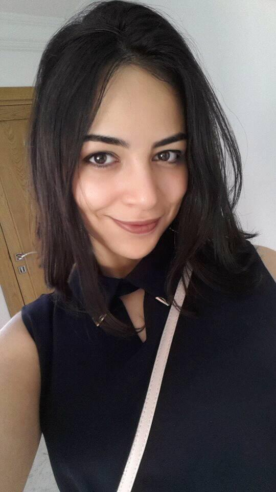

Mon CV
Yasmine Gaubi
Née le 13 Juillet 1999

Etudiante
+216 55 049 274
gaubiyasmine@gmail.com
Mon expérience
-
De 2013 à 2017 :
Théâtre pendant 2 ans, Conservatoire (Violon), Association de citoyenneté -
De 2017 à aujourd'hui :
Obtention du Baccalauréat option Mathématiques, Association internationale AIESEC, Microsoft Club, Android Club, WFP(World Food Programme)
Mes compétences
- Adobe Photoshop et Illustrator
- Pascal, C
- HTML, CSS
Ma formation
Mon institut, FormaLab, apprentissage autodidacte